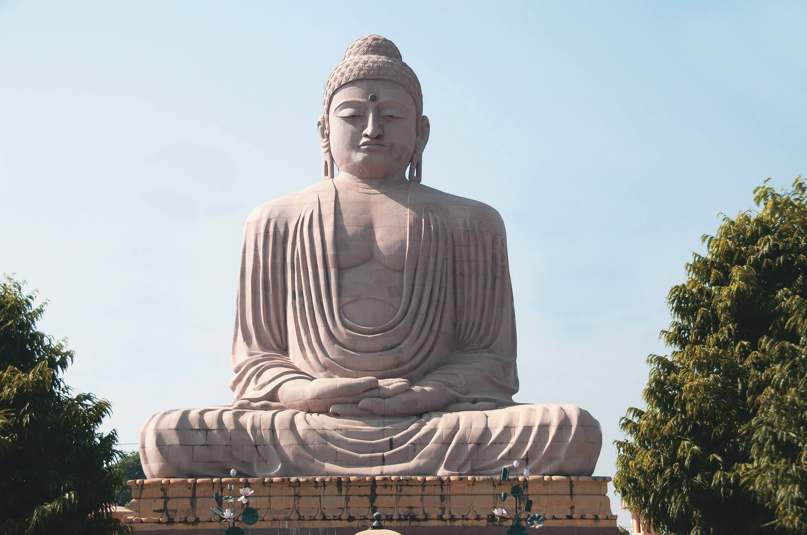
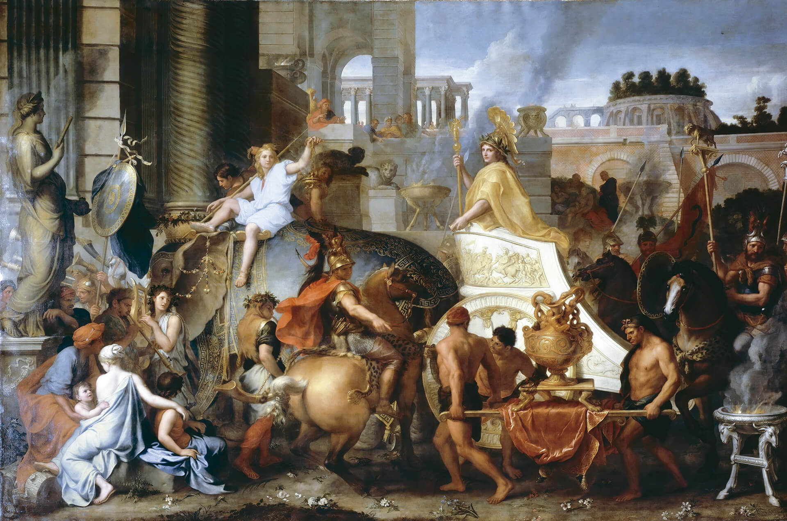
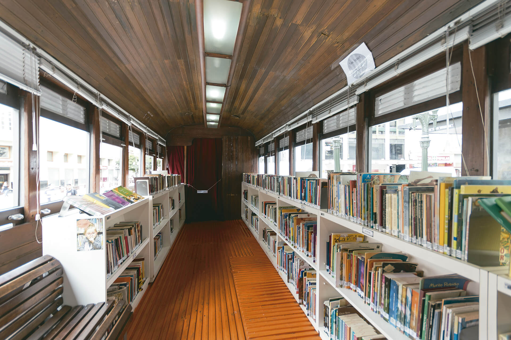
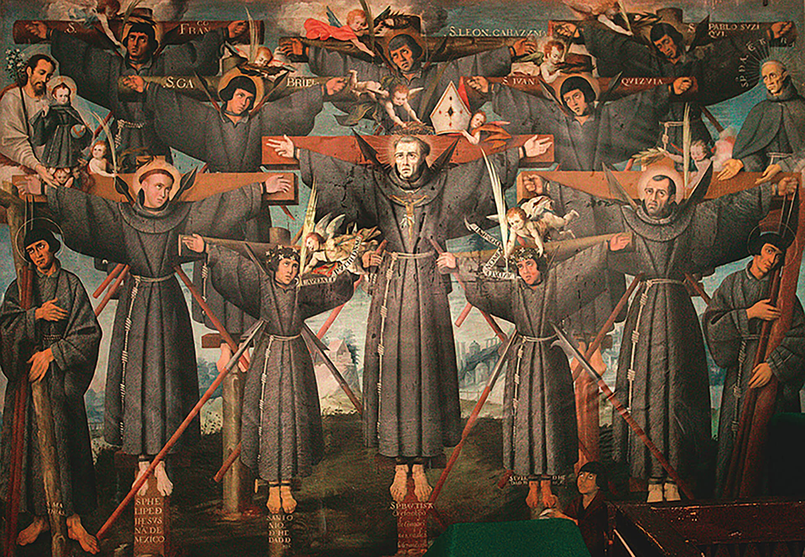

Após observar as fotografias de três bibliotecas localizadas em diferentes países, responda às questões a seguir.
O que guardam as bibliotecas?
Qual é a importância das bibliotecas para a humanidade?
Objetivos
Resgatar as principais características culturais das sociedades gregas da Antiguidade.
Localizar a Macedônia no mapa da Europa, destacando a sua proximidade das cidades-estados gregas.
Conhecer as principais características políticas, econômicas e sociais da Macedônia.
Analisar a política expansionista iniciada pelo rei Filipe II e continuada por seu filho, Alexandre.
Compreender o processo expansionista promovido por Alexandre, destacando as políticas colocadas em prática por ele nos lugares conquistados.
Compreender a cultura helenística como fruto da aproximação de diversas culturas, orientais e ocidentais.
Neste capítulo, estudaremos os macedônios, povo que se estabeleceu ao norte da Grécia e construiu um império que unia Oriente e Ocidente. Um de seus legados foi uma imensa biblioteca erguida na cidade egípcia de Alexandria. Essa cidade
se tornou um dos principais centros de ensino e saber da Antiguidade e, no decorrer de séculos, guardou inúmeros conhecimentos e histórias.
Para entendermos melhor todo esse processo relacionado aos macedônios, vamos iniciar nossa discussão abordando o contexto do mundo grego.
Organize as ideias
Sobre a Grécia na Antiguidade, analise as afirmativas a seguir.
Foi formada por diversos povos, como aqueus, eólios, dórios e jônios.
Foi um poderoso império, cujo imperador era a autoridade máxima em toda a Península Balcânica.
A democracia foi uma das heranças deixadas pelos gregos para as gerações e os povos que os sucederam.
De acordo com a análise, assinale a alternativa correta.
a) Todas as afirmativas são verdadeiras.
b) Todas as afirmativas são falsas.
c) Apenas as afirmativas I e II são verdadeiras.
d) Apenas as afirmativas I e III são verdadeiras.
e) Apenas as afirmativas II e III são verdadeiras.
A respeito da cultura grega, assinale V para a(s) afirmativa(s) verdadeira(s) e F para a(s) falsa(s).
a) Os gregos eram politeístas e seus deuses eram antropomórficos, isto é,
tinham forma humana.
b) Em Esparta, a educação dos meninos, desde muito pequenos, era voltada
para a guerra.
c) Na Antiguidade, a Cidade-Estado Atenas foi marcada pela democracia e por
ser uma sociedade sem escravizados.
d) Os gregos apreciavam o teatro e foram os criadores da comédia e da
tragédia.
e) Os gregos eram pacíficos e nunca entraram em confronto entre si ou com
outros povos da Antiguidade.
Nas linhas a seguir, reescreva a(s) afirmativa(s) falsa(s) da questão anterior, corrigindo-a(s).
Enfraquecimento das cidades-estados gregas
O século VI a.C. foi o período de auge do desenvolvimento cultural na cidade de Atenas e também quando essa cidade exerceu influência militar e política sobre grande parte da Grécia.
As outras cidades-estados gregas, descontentes com a supremacia de Atenas, formaram alianças e se envolveram em conflitos que atingiram toda a Península Balcânica. O principal conflito desse período foi a Guerra do Peloponeso.
A Guerra do Peloponeso (de 431 a.C. a 404 a.C.) ocorreu entre duas ligas de cidades comandadas por Atenas e por Esparta, cidades-estados rivais. Esparta criou a Liga do Peloponeso para conter o prestígio de Atenas na
Grécia. Por sua vez, Atenas reuniu as cidades-estados aliadas e formou a Liga de Delos. Após anos de batalhas, a guerra terminou no ano de 404 a.C. com a vitória de Esparta. Após essa vitória, Esparta tentou impor seus costumes e seu
modo de viver às demais cidades-estados gregas, o que gerou novos conflitos.
Com o enfraquecimento das cidades-estados, os macedônios, que habitavam a região ao norte da Grécia, aproveitaram para promover sua expansão territorial.
Em 338 a.C., o rei Filipe da Macedônia conquistou algumas cidades-estados gregas. Os macedônios, apesar de serem os conquistadores, absorveram muito da cultura grega, em vez de impor a deles sobre as regiões conquistadas.
Macedônia e as cidades-estados gregas no período da Guerra do Peloponeso
A Macedônia era uma região montanhosa ao norte da Grécia, na Península Balcânica. Para os gregos, a Macedônia era primitiva e seus habitantes de tal forma grosseiros, que não mereciam atenção.
Os macedônios falavam grego, além de serem muito influenciados por outros povos. A corte estava localizada na cidade de Pela, que havia se transformado em um centro de arte e de literatura helênica.
As sucessões monárquicas eram geralmente decididas após traições e lutas sangrentas. Filipe II, por exemplo, chegou ao poder em 359 a.C., aos 23 anos de idade, e, para se tornar rei, fez desaparecer o legítimo herdeiro do trono
macedônico, um sobrinho, e ainda matou três meios-irmãos.
Após se tornar imperador, em pouco tempo, Filipe II acabou com as disputas internas pelo poder, fortaleceu o exército e deu início a um processo de conquistas territoriais.
COROA de Filipe II da Macedônia. 1 ornamento em ouro, representando folhas de carvalho. Museu Nacional de Salônica, Salônica.
Essa coroa foi encontrada com outros tesouros de Filipe II em sua tumba, próxima à vila de Vergina, Grécia.
Interpretando documentos
A respeito de Filipe II, leia o fragmento a seguir.
Onde conquistava territórios, Filipe fundava cidades, construía estradas, promovia a agricultura e empenhava-se em ganhar a lealdade de seus novos súditos. Os que resistiam eram submetidos à força, mas o rei preferia alcançar seus
objetivos sem derramar sangue. “O crédito de uma vitória militar”, dizia ele, “eu divido com meus soldados; mas uma vitória diplomática é toda minha”.
IMPÉRIOS em ascensão. História em Revista. Rio de Janeiro: Cidade Cultural, 1990. p. 16.
De acordo com o fragmento, responda às questões.
a) Qual era a política adotada por Filipe II ao conquistar uma nova região?
b) Explique os motivos que levavam Filipe II a agir com diplomacia, sempre que possível, em relação aos povos conquistados.
Formação do Império Macedônico
Após a morte de Filipe II, em 336 a.C., seu filho, Alexandre Magno, tomou o controle dos domínios conquistados pelo seu pai e os ampliou. Com o apoio de forças gregas, lutou contra os persas e os derrotou. Com essa vitória, as forças
macedônicas avançaram sobre a Ásia Menor, chegando à Palestina e à Síria. Em seguida, Alexandre e suas tropas se dirigiram ao Egito, conquistando a terra dos faraós. Por fim, retornaram à Ásia Menor e entraram na Mesopotâmia para, pouco
tempo depois, invadir a Pérsia. Ultrapassando o Planalto do Irã, as forças alexandrinas chegaram aonde nenhum ocidental havia sonhado: à Índia.
Troca de ideias
Observe o mapa a seguir. Ele mostra todos os territórios conquistados por Alexandre Magno.
Talita Kathy Bora
Fonte: ALBUQUERQUE, Manoel M. de. Atlas histórico escolar. Rio de Janeiro: Fename, 1977. p. 76. Adaptação.
Agora, responda a estas questões:
a) Qual a importância de Alexandre Magno para a Macedônia?
b) Para que locais Alexandre levou a cultura grega?
Política e economia
À medida que ampliava a extensão do império, Alexandre mantinha a política de seu pai, a de utilizar a diplomacia com os povos conquistados sempre que possível.
Alexandre desejava conter o ódio e as rebeliões dos povos conquistados. Por isso, proibiu, por exemplo, a ocorrência de saques e pilhagens pelas tropas macedônicas. E, para evitar o descontentamento entre seus soldados, antes de cada
nova conquista, eram enviados emissários que providenciavam bebidas e alimentos para as comemorações que ocorriam após as vitórias. Alexandre também costumava fazer oferendas aos deuses locais como forma de demonstrar respeito aos
conquistados.

Museu Arqueológico Nacional de Nápoles, Nápoles
A BATALHA de Isso. [ca. 150 a.C.]. 1 mosaico de seixos, formado por aproximadamente 2 milhões de peças de vários tipos de mármore (tesselas), 272 cm × 513 cm. Museu Arqueológico Nacional de Nápoles, Nápoles.
Alexandre tornou o exército deixado por seu pai ainda mais numeroso e especializado. Ele criou as falanges macedônicas, compostas de soldados de infantaria (armados com longas lanças, espadas, punhais e escudos) e de cavalaria.
É importante salientar que, apesar de todas essas estratégias para a pacificação e a dominação dos grupos conquistados, não foi fácil manter um grande número de povos diferentes e um vasto território sob a administração macedônica.
Revoltas dos povos vencidos e rebeliões entre os integrantes do exército de Alexandre foram registradas em diversos documentos.
Para administrar tão vasto império, Alexandre estabeleceu várias formas de organização de acordo com as características dos povos conquistados. Em alguns locais, Alexandre instituiu uma administração sob sua própria autoridade; em
outras, manteve o líder derrotado no poder; ou ainda utilizou as divisões provinciais criadas pelos persas (as satrapias), nomeando alguns de seus generais como governadores de províncias. Alexandre aproveitou parte significativa da
estrutura persa, como as estradas, para levar grandes expedições a lugares muito distantes da Macedônia.
Para facilitar as trocas comerciais, fez circular moedas, as quais apresentavam a efígie do imperador. Aproveitando as estruturas persas, os macedônios permitiram uma integração comercial que
abrangia desde terras da Ásia, o atual Oriente Médio, e o norte da África até o sul do continente europeu. Produtos de primeira necessidade e artigos de luxo, como perfumes e especiarias, eram comercializados por mercadores que viajavam
por todo o território do Império.
MOEDAS de Alexandre, o Grande [representado com touca do leão de Herácles]. Museu Britânico, Londres.
O comércio foi uma importante atividade econômica para o Império Macedônico. A criação de uma moeda que circulasse em todo o território favoreceu essa prática.
Difusão da cultura helênica
Alexandre fez questão de difundir a cultura grega nos locais conquistados. Ele levou consigo sábios gregos por todos os locais em que impôs seu poder. Em diversas regiões, construiu cidades com edificações semelhantes às gregas.
Centros de estudos foram criados, reunindo muitos filósofos, matemáticos, astrônomos, arquitetos, geógrafos, botânicos e médicos, provenientes de diversas partes do Império Macedônico. Podemos citar as cidades de Alexandria (Egito) e de Atenas como dois grandes centros de estudo e difusão da cultura helênica.
Alexandria foi fundada por Alexandre, em 331 a.C., no norte do Egito. Por causa de sua localização geográfica – próxima ao Mar Mediterrâneo, em uma das bocas pelas quais o Rio Nilo deságua nesse oceano – rapidamente
se tornou um grande centro comercial e cultural para o qual se dirigiram povos de diversas regiões do mundo antigo. De acordo com o historiador romano Quinto Cúrcio Rufo, pelas ruas da cidade, em seu centro comercial, nos templos e na
biblioteca de Alexandria, era possível ouvir mais de 20 idiomas falados ao mesmo tempo.
As obras dos filósofos Platão e Aristóteles chegaram aos cantos mais remotos do Império graças ao esforço de Alexandre na difusão da cultura grega. O teatro e as artes plásticas da Grécia também foram favorecidos por essa política.
Alexandre estimulou o casamento de muitos de seus generais com mulheres da elite dos povos conquistados. Esse era um artifício para que ocorresse a miscigenação cultural.
Interpretando documentos
Analise os documentos a seguir.
Se os gostos de seu fundador serviam de parâmetro, Alexandria estava destinada a se tornar uma cidade livresca. O pai de Alexandre, Filipe da Macedônia, contratara Aristóteles para ser tutor particular do filho e, graças aos
ensinamentos do filósofo, Alexandre tornou-se “um grande amante de todos os tipos de conhecimentos e leituras” – leitor tão ávido, de fato, que raramente deixava de ter um livro consigo. Certa ocasião, viajando pela Ásia e “estando
desprovido de outros livros”; mandou que um de seus comandantes lhe enviasse vários; foi devidamente atendido, recebendo a História de Filisto, várias peças de Eurípedes, Sófocles e Ésquilo e poemas de Telestes e Filoxeno.
MANGUEL, Alberto. Uma história da leitura. São Paulo: Companhia das Letras, 1997. p. 216.

Museu do Louvre, Paris
LE BRUN, Charles. Entrada de Alexandre em Babilônia. 1665. 1 óleo sobre tela, color., 450 cm × 707 cm. Museu do Louvre, Paris.
Após a análise dos documentos, responda às questões a seguir.
Quem foi o fundador de Alexandria, ao qual o texto faz referência?
De que forma Aristóteles contribuiu para que a cultura helênica fosse difundida por todo o Império Macedônico?
Retorne à página de abertura do capítulo e reflita sobre a importância da biblioteca fundada em Alexandria, na Antiguidade. Anote as suas conclusões nas linhas a seguir.
Observe, novamente, a reprodução da obra de Charles Le Brun e registre:
a) tema retratado na obra;
b) elementos da obra que podem ser relacionados à cultura grega.
O Império Macedônico, que atingiu grandes proporções territoriais em um período considerado curto (de 334 a.C. a 323 a.C.), não durou muito tempo. Alexandre morreu de forma prematura no ano 323 a.C., provavelmente acometido por tifo.
Como o imperador não deixou um sucessor, os generais macedônios passaram a disputar o controle das províncias do Império, fator que acelerou a desintegração.
Outras histórias
A Biblioteca de Alexandria não foi a única que existiu durante a Antiguidade. Na Mesopotâmia, havia bibliotecas onde eram guardadas placas de argila com informações em escrita cuneiforme, datadas do terceiro milênio antes de Cristo.
Leia o fragmento que trata da Biblioteca de Nínive, criada por Assurbanipal II, governante da Assíria durante o século VII a.C.
Na [...] cidade de Nínive, capital do império, ele [Assurbanipal II] organizou uma grande biblioteca, que chegou a abrigar 25 mil placas. Embora essa biblioteca fosse antes de mais nada um arquivo, Assurbanipal tinha aspirações
universais. Além de profecias, fórmulas de encantamento e hinos sagrados, encomendou também peças literárias escritas nas diversas línguas da Mesopotâmia – o assírio, o sumério, o acádio, o ugarítico e o aramaico, dentre outras. Ao
que parece, a biblioteca era altamente organizada. As placas componentes de uma mesma obra eram reunidas num único bloco, no qual se punha um rótulo identificador do conteúdo. Havia também um catálogo registrando os títulos das
obras e o número de placas de que cada uma era composta. Outros arquivos e bibliotecas espalhados pela Mesopotâmia exibiam níveis igualmente elevados de organização. Havia repositórios em
que as placas eram guardadas em cestas
numeradas, com os títulos gravados nas bordas da argila para facilitar a identificação. Levando-se em conta a antiguidade desses escritos, o número dos que chegaram até nós é impressionante. Só da biblioteca de Assurbanipal há 20
mil fragmentos conservados no Museu Britânico. [...]
FRAGMENTOS de placas cilíndricas com 8 linhas de inscrição. Período Neoassírio. 2,54 cm × 4,44 cm. Museu Britânico, Londres.
BATTLES, Matthew. A conturbada história das bibliotecas. São Paulo: Planeta do Brasil, 2003. p. 31-32.
ugarítico: língua falada na cidade de Ugarit (na atual Síria).
aramaico: língua semítica falada no Irã, na Síria e no Iraque.
repositórios: depósitos, bibliotecas.
Cotidiano
No decorrer deste capítulo, estudamos algumas informações sobre bibliotecas e a importância delas para a humanidade. Tratamos das bibliotecas de Alexandria e Nínive, apresentamos o Real Gabinete Português de Leitura (Rio de Janeiro), a
Biblioteca Nacional de Praga e a Biblioteca Municipal de Stuttgart.
Na atualidade, há muitas iniciativas de criação de bibliotecas em lugares inusitados. O objetivo é levar conhecimento e lazer para as populações que não têm o hábito de frequentar livrarias ou bibliotecas formais. Observe os exemplos
ao lado.
P. Imagens/Pith
Bondinho da leitura, Curitiba

P. Imagens/Pith
Bondinho da leitura, Curitiba

Green Mobility
Bicicloteca, São Paulo
Seguindo os dois exemplos apresentados, que tal você e seus colegas organizarem uma biblioteca para a turma? Para isso, é necessário
destinar um espaço onde serão organizados os livros disponibilizados por vocês;
decidir como os alunos se sucederão no cargo de bibliotecário;
definir o prazo de empréstimo de cada livro e os períodos de renovação.